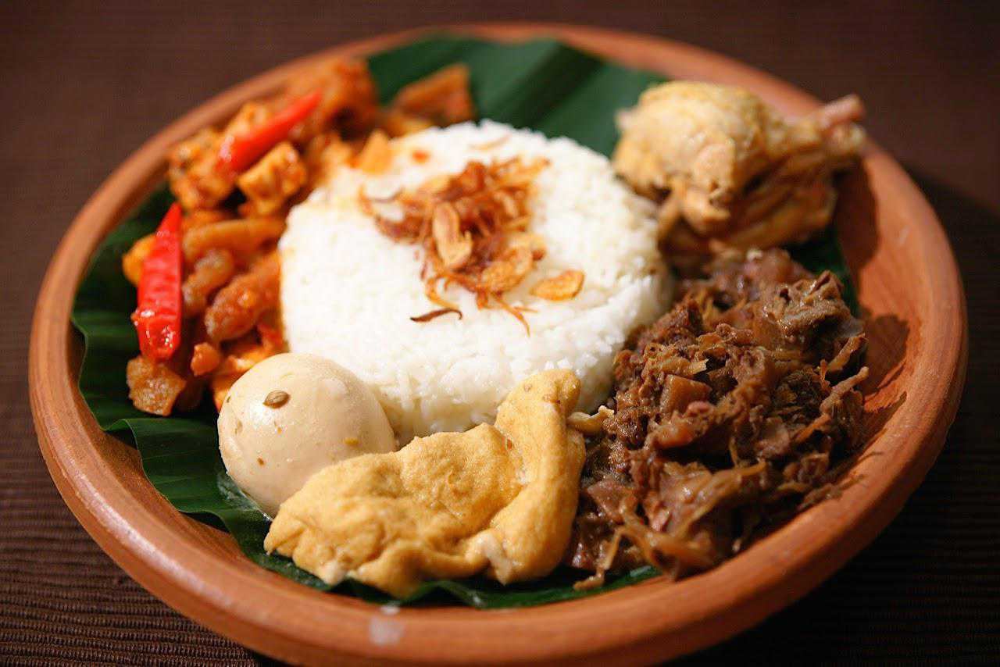
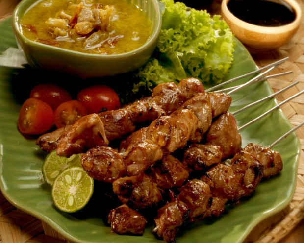
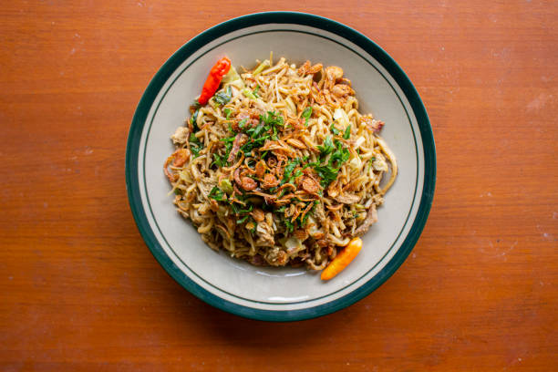
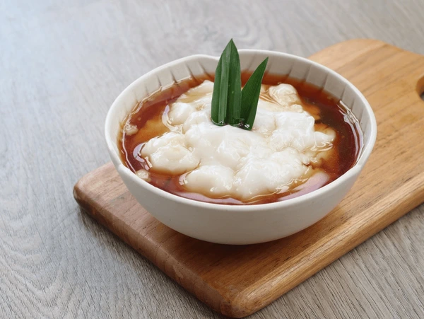
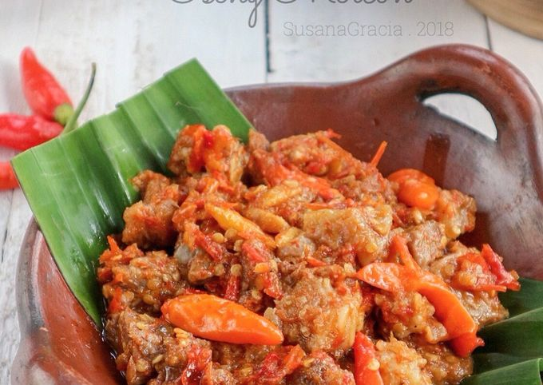

6 Menu Makanan Khas Jogja 🌿

Gudeg Jogja
Nangka muda dimasak santan dengan cita rasa manis khas Jogja.
Bahan-bahan:
- 1 kg nangka muda, potong-potong
- 1 liter santan kental
- 250 gr gula merah
- 5 siung bawang merah, iris
- 3 siung bawang putih, iris
- 2 cm lengkuas, memarkan
- 3 lembar daun salam
- 1 sdt garam
- 500 ml air kelapa
Cara membuat:
- Rebus nangka muda dengan air kelapa hingga empuk.
- Tumis bawang merah, bawang putih, lengkuas, dan daun salam sampai harum.
- Masukkan tumisan dan gula merah ke rebusan nangka, aduk rata.
- Tambahkan santan dan garam, masak dengan api kecil sampai santan meresap dan kuah mengental.
- Sajikan dengan nasi, telur pindang, dan ayam opor.
Bakpia Pathok
Kue kering isi kacang hijau yang sangat populer sebagai oleh-oleh khas Jogja.
Bahan kulit:
- 250 gr tepung terigu
- 50 gr gula halus
- 75 gr margarin, lelehkan
- 80 ml air
- 1/4 sdt garam
Bahan isian kacang hijau:
- 200 gr kacang hijau kupas, rendam dan kukus
- 150 gr gula pasir
- 50 gr margarin
- 1/4 sdt vanili bubuk
- 150 ml santan kental
Cara membuat:
- Campur bahan kulit sampai kalis, diamkan 15 menit.
- Haluskan kacang hijau kukus, masak dengan gula, margarin, vanili, dan santan hingga kering, dinginkan.
- Bulatkan adonan kulit, pipihkan, isi dengan isian kacang hijau, bentuk bulat.
- Panggang dengan suhu 160°C selama 25 menit hingga matang dan kecokelatan.
- Dinginkan dan siap disajikan.

Sate Klathak
Sate kambing unik dengan tusukan jeruji sepeda khas Bantul, rasanya gurih dan sederhana.
Bahan-bahan:
- 500 gr daging kambing, potong dadu
- Garam dan merica secukupnya
- Minyak goreng secukupnya
- Tusuk sate dari jeruji sepeda (atau tusuk sate biasa)
Cara membuat:
- Taburi daging dengan garam dan merica, diamkan 30 menit.
- Tusuk daging dengan jeruji sepeda.
- Bakar sate sambil sesekali dioles minyak goreng sampai matang dan kecokelatan.
- Sajikan dengan kuah gulai kambing dan nasi putih hangat.

Bakmi Jawa
Mie ayam khas Jawa dengan bumbu manis dan gurih yang terkenal di Jogja.
Bahan-bahan:
- 200 gr mie telur basah
- 150 gr daging ayam, suwir
- 2 siung bawang putih, cincang
- 2 siung bawang merah, iris
- 2 sdm kecap manis
- 1 sdt saus tiram
- Garam, merica, dan gula secukupnya
- Minyak untuk menumis
- Daun bawang dan bawang goreng untuk taburan
Cara membuat:
- Tumis bawang putih dan bawang merah hingga harum.
- Masukkan ayam suwir, aduk rata dan bumbui dengan kecap manis, saus tiram, garam, merica, dan gula.
- Rebus mie sebentar, tiriskan, lalu campur dengan tumisan ayam.
- Sajikan dengan taburan daun bawang dan bawang goreng.

Jenang Sumsum
Puding tepung beras dengan kuah gula jawa legit khas Jogja.
Bahan puding:
- 150 gr tepung beras
- 500 ml santan
- 1/4 sdt garam
Bahan kuah gula jawa:
- 200 gr gula merah, serut
- 200 ml air
- 2 lembar daun pandan
- Sejumput garam
Cara membuat:
- Campur tepung beras, santan, dan garam, aduk rata.
- Masak dengan api kecil sambil diaduk hingga mengental dan matang. Tuang ke cetakan, dinginkan.
- Rebus gula merah, air, daun pandan, dan garam hingga larut dan agak kental.
- Sajikan puding dengan siraman kuah gula jawa hangat.

Oseng-Oseng Mercon
Masakan pedas khas Jogja dengan daging sapi dan cabai rawit yang menggigit.
Bahan-bahan:
- 300 gr daging sapi, potong dadu kecil
- 15 buah cabai rawit merah, iris kasar
- 5 siung bawang merah, iris tipis
- 3 siung bawang putih, cincang
- 2 lembar daun salam
- 2 cm lengkuas, memarkan
- 2 sdm kecap manis
- Garam dan gula secukupnya
- Minyak untuk menumis
Cara membuat:
- Rebus daging sapi hingga empuk, tiriskan.
- Tumis bawang merah dan bawang putih hingga harum.
- Masukkan daun salam dan lengkuas, aduk sebentar.
- Tambahkan cabai rawit, aduk hingga layu.
- Masukkan daging, beri kecap manis, garam, dan gula. Masak hingga bumbu meresap dan agak kering.
- Sajikan dengan nasi putih hangat.